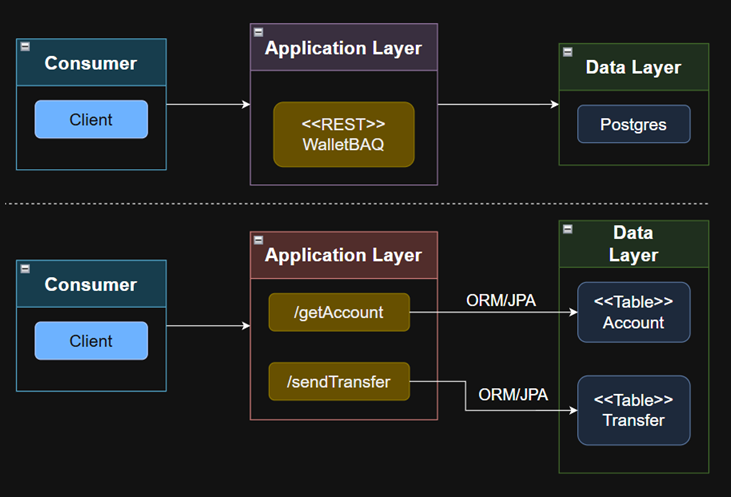

Fase 0 · El problema y el andamiaje¶
Rama: fase-0
Lo que vas a lograr: entender el problema y sus requisitos, ver la arquitectura de un vistazo, elegir el stack justificándolo, generar el proyecto y organizarlo por features, y conectarlo a Supabase.
Parte 1 — El problema, en lenguaje natural¶
Antes de escribir una línea, tengamos claro qué estamos resolviendo. Nada de tecnología todavía; solo el negocio.
Una billetera digital tiene que hacer algo que suena trivial y no lo es: mover plata de una cuenta a otra sin que se pierda ni se duplique un peso. Si algo falla a la mitad, no puede quedar la cuenta de origen debitada y la de destino sin acreditar. Cada movimiento tiene que quedar registrado, y cuando ocurre, alguien va a querer enterarse (un correo, una alerta).
Eso es todo el problema. Lo vamos a construir primero como un endpoint REST directo y, cuando ya funcione, le meteremos eventos para desacoplar el registro y la notificación.
Parte 2 — El requerimiento, como historia de usuario¶
El problema en prosa está bien para conversar, pero para construir conviene ordenarlo. Lo escribimos como en la industria: qué debe hacer el sistema (funcional), cómo debe comportarse (no funcional) y qué límites no puede cruzar (restricciones).
Concepto al paso: funcional, no funcional y restricciones
Los requisitos funcionales son las acciones que el sistema ofrece ("transferir plata"). Los no funcionales son cualidades de cómo las hace ("nunca dejar un saldo roto", "responder rápido"). Las restricciones son reglas duras que acotan la solución ("el dinero se representa exacto"). Separarlos evita que se te escape lo importante: casi siempre, lo que hunde un sistema de plata no es una función que falta, sino un no funcional que nadie respetó.
Historia de usuario. Como usuario de la wallet, quiero consultar mi saldo y transferir plata a otra cuenta, con la certeza de que ni un centavo se pierde y de que cada movimiento queda registrado.
Funcional — qué debe hacer
- Consultar el saldo de una cuenta.
- Transferir plata de una cuenta a otra, rechazando la operación si no hay saldo suficiente.
- Registrar cada movimiento: de quién, a quién, cuánto y cuándo.
- Avisar cuando ocurre un movimiento (correo u otra reacción). Esto llega en la parte de eventos.
No funcional — cómo debe comportarse
- Consistencia: una transferencia es todo-o-nada. Jamás puede quedar la cuenta de origen debitada y la de destino sin acreditar.
- Exactitud del dinero: ni un centavo perdido por redondeo.
- Evolución sin riesgo: poder agregar reacciones nuevas (correo, antifraude, métricas) sin tocar el corazón de la transferencia.
- Trazabilidad: cada cuenta y cada movimiento llevan registro de cuándo ocurrieron.
Restricciones — los límites duros
- El dinero se representa con precisión exacta; nada de números flotantes.
- No se puede perder un movimiento ni procesarlo mal porque un proceso se cayó.
- El esquema de la base viaja versionado en el repositorio, reproducible en cualquier máquina.
Parte 3 — La arquitectura, a vista de pájaro¶
Con el problema y los requisitos claros, miremos la forma de la solución antes de elegir herramientas.

Es simple a propósito: unos clientes entran por HTTP a una aplicación (la wallet), y esa aplicación lee y escribe en una base de datos relacional a través de un mapeo objeto-relacional (ORM/JPA). Toda la lógica —validar el saldo, mover la plata, registrar el movimiento— vive en esa caja del medio.
Esa forma nos alcanza para las primeras fases. Más adelante, cuando entren los eventos, a la derecha aparecerá un broker por donde salen los hechos que otros servicios consumen; pero el corazón sigue siendo el mismo: clientes → aplicación → base.
Parte 4 — El stack, elegido desde los requisitos¶
Recién ahora elegimos herramientas, y cada una responde a un requisito de arriba, no a la moda:
- Exactitud del dinero → una base relacional que guarda decimales exactos (
NUMERIC) y, en el código,BigDecimal. Nada de flotantes. - Consistencia todo-o-nada → una base con transacciones ACID. Postgres las tiene, y Spring nos deja envolver una operación en una transacción con una anotación.
- Base gestionada, sin dolor de instalación → Supabase, un Postgres en la nube detrás de un login.
- Esquema versionado y reproducible → Flyway, que aplica migraciones SQL numeradas y anota cuáles ya corrió.
- Menos plomería, servidor listo → Spring Boot, que trae servidor web, acceso a datos e inyección de dependencias sin que configures medio mundo.
- Lenguaje expresivo y seguro → Kotlin:
data classpara objetos de datos en una línea, null-safety para que los nulos no exploten en runtime, ysealed classpara modelar con exactitud los finales de una operación (lo verás en la transferencia). - Evolución sin riesgo → mensajería por eventos con Kafka/Redpanda, que entra en la segunda parte para desacoplar las reacciones.
Concepto al paso: qué es Spring Boot
Spring Boot es un framework para armar aplicaciones backend en la JVM sin configurar medio mundo a mano. Te da un servidor web embebido, conexión a base de datos, inyección de dependencias y un montón de piezas listas para usar. Tú te concentras en tu lógica; Boot cablea lo aburrido.
Con las decisiones tomadas, generamos el esqueleto. Spring Initializr es un asistente web que lo arma por ti. Entra a https://start.spring.io y llena:
| Campo | Valor |
|---|---|
| Project | Gradle - Kotlin |
| Language | Kotlin |
| Spring Boot | 4.1.x (o la 4.x estable más cercana) |
| Group | com.baqjug |
| Artifact | wallet |
| Package name | com.baqjug.wallet |
| Packaging | Jar |
| Java | 25 |
En Dependencies, agrega estas por ahora (la de Kafka la sumamos en la Fase 6):
| Dependencia | Para qué |
|---|---|
| Spring Web | La API REST |
| Spring Data JPA | Guardar cuentas y movimientos |
| PostgreSQL Driver | El driver de Supabase |
| Validation | Validar los datos que entran |
| Flyway Migration | Versionar el esquema de la base |
Haz clic en GENERATE, descomprime dentro de tu repo y ábrelo en IntelliJ (File → Open). La primera vez baja el wrapper de Gradle y las dependencias. Espera a que termine.
El plugin kotlin-jpa ya viene
Si generaste con JPA, el build.gradle.kts trae el plugin kotlin("plugin.jpa"). Ese plugin le genera por detrás a tus entidades el constructor sin argumentos que JPA exige, sin que tú tengas que escribirlo. Sin él, las entidades de Kotlin no arrancan.
Parte 5 — Cómo organizamos el código¶
Acá tomamos la decisión de organización más importante del taller, y la vamos a explicar con calma porque de esto depende cómo se ve todo lo que sigue. Si nunca has pensado en "arquitectura de software", tranquilo: por ahora es solo dónde poner cada archivo y por qué.
La forma común (y por qué no la usamos)¶
Cuando arrancas, lo típico es agrupar el código por capa técnica: una carpeta controllers con todos los controladores, otra services con todos los servicios, otra repositories con todos los repositorios. Funciona para algo chiquito. Pero a medida que crece, para tocar "lo de transferencias" terminas saltando entre tres o cuatro carpetas lejanas, porque todo lo de una misma cosa quedó regado.
Lo que sí hacemos: agrupar por feature¶
Nosotros agrupamos por feature: todo lo de cuentas junto, todo lo de transferencias junto, todo lo de movimientos junto. Abres la carpeta account y ahí está TODO lo de cuentas: la entidad, el repositorio, el servicio, el controlador. No tienes que buscar en cinco lados.
Concepto al paso: ¿qué es una 'feature'?
Una feature es una capacidad del sistema con sentido de negocio: "cuentas", "transferencias", "movimientos". No es una capa técnica ("controladores"), es algo que el negocio reconocería. La regla que seguimos viene de un enfoque llamado Tomato Architecture, que en un monolito dice: primero divide por feature, y solo adentro de cada feature separa por capas.
Esto no es un capricho de estilo. Es el principio #1 de Tomato Architecture, un enfoque pragmático cuyo lema es "no te compliques": nada de puertos, adaptadores ni abstracciones "por si algún día cambiamos de base de datos". Código simple y aburrido, que es el que sobrevive años y el que un compañero nuevo entiende sin sufrir.
Dentro de cada feature: domain y web¶
Cada feature se parte en dos sub-carpetas:
domaines el corazón. Acá vive la lógica: la entidad que se guarda en la base, el repositorio, el servicio con las reglas de negocio, el mapper y los objetos de datos. Eldomainno sabe nada de HTTP ni de quién lo llama. Podrías invocarlo desde unmain(), desde una tarea programada o desde un test, y le daría exactamente igual.webes la puerta de entrada por HTTP: el controlador. Su único trabajo es recibir la petición web, sacar los datos y pasárselos aldomain. Cero lógica de negocio acá.
Concepto al paso: ¿por qué separar domain de web?
Porque el "cómo entra" (HTTP hoy, una cola de mensajes mañana, la línea de comandos pasado) no debería ensuciar el "qué hace". Si la lógica vive en domain sin depender de la web, el día que además la quieras disparar por un evento —cosa que haremos en la Fase 7— no reescribes nada: la vuelves a llamar desde otra puerta. El domain es reusable; la puerta es intercambiable.
Dos cosas que NO vamos a hacer (y por qué)¶
Estas dos decisiones van a contramano de mucho tutorial que verás por ahí, así que las explico bien:
1. No creamos interfaces "por si acaso". En muchos proyectos, por cada AccountService hay una interfaz AccountService y una clase AccountServiceImpl que la implementa, aunque solo exista UNA implementación. Eso es peso muerto: dos archivos para una sola cosa. Nuestro AccountService va a ser una clase concreta y ya. ¿Que mañana necesitas una segunda implementación? El IDE te extrae la interfaz en dos teclas. ¿Que la necesitas para un test? Las librerías de mocking mockean clases sin problema. Crear la interfaz desde el día uno es resolver un problema que casi nunca llega.
La única excepción: los repositorios
Vas a ver que AccountRepository sí es una interfaz. Pero no es idea nuestra: Spring Data exige una interfaz para generarte la implementación por detrás (lo vemos en la Fase 1). Es una interfaz que el framework nos obliga a tener, no una que inventamos "por si acaso". Esa es toda la diferencia.
2. Separamos la entidad de la base de lo que sale por la API. La clase que se guarda en Postgres (la llamaremos AccountEntity) NO es la misma que devolvemos en el JSON (AccountResponse). Un pequeño mapper traduce de una a la otra. Suena a trabajo extra, pero te salva de que un cambio en la tabla te cambie sin querer el contrato de tu API. Lo ves en acción en la Fase 2.
La estructura, en un diagrama¶
Crea esta estructura dentro de com.baqjug.wallet (clic derecho → New → Package). No la llenamos toda ahora; cada fase puebla lo que le toca:
com.baqjug.wallet
├── account
│ ├── domain ← entidad, repositorio, servicio, mapper, DTOs, excepciones
│ └── web ← el controlador REST
├── transfer
│ ├── domain
│ └── web
├── movement
│ ├── domain ← entidad, repositorio, servicio
│ └── messaging ← aparece con los eventos (Fases 6-7): consume del broker
├── notification ← aparece en la Fase 7 (consumidor por eventos)
│ └── messaging
└── web
└── exception ← manejo de errores compartido (GlobalExceptionHandler)
¿De dónde sale todo esto?
Este patrón lo popularizó Siva Prasad Reddy con el nombre de Tomato Architecture. El nombre no significa nada (igual que "hexagonal" tampoco); es un guiño para no tomarse la arquitectura tan en serio. Si quieres el detalle, está en su blog. Lo que nos importa acá: package-by-feature, servicios concretos, y abrazar el framework en vez de envolverlo en abstracciones.
Parte 6 — Conectar Supabase¶
Abre tu proyecto de Supabase, ve a Project Settings → Database y copia los datos de conexión. Vamos a pasárselos a Spring por variables de entorno, no quemados en el código.
Crea o edita src/main/resources/application.yaml:
spring:
application:
name: wallet
# Supabase (Postgres). Los valores reales van por variables de entorno.
datasource:
url: ${SUPABASE_DB_URL}
username: ${SUPABASE_DB_USER}
password: ${SUPABASE_DB_PASSWORD}
# JPA no crea tablas: de eso se encarga Flyway.
jpa:
hibernate:
ddl-auto: validate
open-in-view: false
# Flyway busca las migraciones en db/migration.
flyway:
enabled: true
Concepto al paso: variables de entorno
En vez de escribir la contraseña de la base dentro del código (donde terminaría en Git, a la vista de todos), la leemos de una variable de entorno con ${NOMBRE}. En IntelliJ las configuras en Run → Edit Configurations → Environment variables. En producción las inyecta la plataforma. El código nunca sabe el secreto.
La URL de Supabase tiene esta forma (usa el host y puerto que te muestra tu panel):
Por qué ddl-auto=validate
Le decimos a JPA que no cree ni modifique tablas. Solo que valide que lo que hay en la base concuerda con tus entidades. Quien manda sobre el esquema es Flyway, con migraciones versionadas. Dejar que Hibernate cree tablas solo está bien para un juguete; en algo que maneja plata, no.
Cierre de la fase¶
Todavía no hay tablas ni entidades, así que la app aún no levanta contra la base. Eso es normal. Dejamos el andamiaje listo:
./gradlew compileKotlin
git add .
git commit -m "fase-0: proyecto wallet, estructura por features y conexión a Supabase"
git branch fase-0
En la Fase 1 modelamos la cuenta con su saldo, la primera migración de Flyway, y la app arranca por fin contra Supabase.